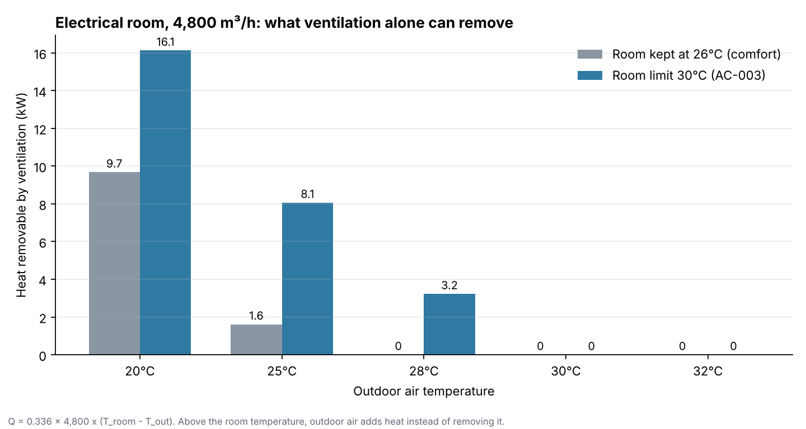

발전소 설계를 처음 맡은 후배가 실별 설계조건표를 보다가 이렇게 묻는다고 해볼게요. “전기실은 왜 30℃예요? KDS에는 40℃까지 된다던데요. 그리고 기계실은 5℃면 너무 춥지 않나요?” 둘 다 좋은 질문입니다. 답의 출발점은 같습니다. 이 실에서 무엇을 보호하려고 하는가.
지난 두 글에서는 바깥 공기를 정했습니다(국내 외기조건, 해외 외기조건). 오늘은 그 반대편, 실내를 몇 ℃·몇 %로 설계할지를 정리하겠습니다. 냉난방부하는 결국 이 두 값의 차이에서 나옵니다.
먼저 결론부터 말씀드릴게요
실내조건을 정하기 전에 실의 목적을 네 가지로 나눕니다.
| 구분 | 무엇이 조건을 정하나 | 대표 공간 |
|---|---|---|
| ① 사람 중심 | 재실자의 쾌적성 | 사무실, 탈의실, 탕비실 |
| ② 사람 + 중요장비 | 재실자 + 전자·계장장비 운전환경 | 중앙제어실 |
| ③ 장비·설비 보호 | 장비 허용온도, 동결방지 | 전기실, 기계실 |
| ④ 환기 중심 | 방열, 연소공기 | 비상발전기실 |
같은 건물 안에 있어도 HVAC의 목적이 다르니, 모든 실에 26℃를 쓰지 않습니다. 제가 쓰는 실별 조건은 이렇습니다.
| 실 용도 | 냉방 | 난방 | 습도 | 성격 |
|---|---|---|---|---|
| 사무실·크레인 제어실 | 26℃ | 21℃ | 냉방 RH 50% | [별표 8] 범위 안에서 채택 |
| 중앙제어실 | 24℃ | 24℃ | RH 50% | 목표 24℃, 운전범위 ±2℃ |
| 제어장비·중요 전자장비실 | 24℃ 기본 | 24℃ 기본 | RH 50% 기본 | 제조사·프로젝트 조건 확인 |
| 탈의실 | 26℃ | 22℃ | 냉방 RH 60% | 착의 상태 고려 |
| 샤워실 | 미적용 | 24℃ | — | 냉방보다 배기 우선 |
| 탕비실·간이주방 | 26℃ | 21℃ | 냉방 RH 50% | 일반 재실공간 |
| 화장실 | 미적용 | 20℃ | — | 짧은 재실, 상시 배기 |
| 전기실·MCC·배전반실 | 30℃ 상한 | 제조사 확인 | — | KDS 허용 40℃보다 낮게 |
| 기계실 | 미적용 | 5℃ 하한 | — | 동결방지 |
| 비상발전기실 | 쾌적 냉난방 없음 | 쾌적 냉난방 없음 | — | 제조사 허용온도 + 열수지 |
| 일반 창고 | 미적용 | 미적용 | — | 저장품 조건이 없을 때 |
여기서 “Target”, “상한(Max.)”, “하한(Min.)”은 서로 다른 종류의 값입니다. 중앙제어실 24℃는 맞추려는 목표이고, 전기실 30℃는 넘지 않을 상한, 기계실 5℃는 내려가지 않을 하한입니다.
사무실 26℃는 법이 정한 숫자가 아닙니다
「건축물의 에너지절약설계기준」 제9조와 [별표 8]은 용도별 실내 온·습도를 범위로 줍니다. 사무소는 난방 20~23℃, 냉방 26~28℃, 냉방 RH 50~60%입니다.
| 용도 | 난방 ℃ | 냉방 ℃ | 냉방 RH % |
|---|---|---|---|
| 사무소 | 20~23 | 26~28 | 50~60 |
| 병원(병실) | 21~23 | 26~28 | 50~60 |
| 숙박시설(객실) | 20~24 | 26~28 | 50~60 |
| 판매시설 | 18~21 | 26~28 | 50~60 |
| 목욕장 | 26~29 | 26~29 | 50~75 |
그러니 사무실 26℃ / 21℃ / 50%는 법이 정한 고정값이 아니라 허용 범위 안에서 제가 고른 값입니다. 냉방은 범위의 하한인 26℃, RH도 하한인 50%를 택해 쾌적성을 우선했습니다. 그만큼 부하는 커집니다. 얼마나 커지는지 보겠습니다.
온도 1℃의 차이: 서울 냉방외기 31.2℃, 외기·외피의 온도차 비례 부하계수를 120.9W/K로 두면(AC-001의 대표 사무실 예제와 같은 조건)
| 실내온도 | 온도차 | 온도차 비례 부하 |
|---|---|---|
| 26℃ (채택) | 5.2K | 약 629W |
| 27℃ | 4.2K | 약 508W |
| 28℃ | 3.2K | 약 387W |
26℃를 쓰면 28℃보다 이 항목이 약 242W 커집니다. 일사·인체·조명·기기 부하는 따로 있으니, 전체 냉방부하가 같은 비율로 커진다는 뜻은 아닙니다.
습도 10%의 차이: 외기 300㎥/h, 서울 외기 수분비 18.27g/kgDA 기준으로
| 실내 RH | 실내 수분비 | 외기 잠열 |
|---|---|---|
| 50% (사무실) | 약 10.5g/kgDA | 약 1.95kW |
| 55% | 약 11.6g/kgDA | 약 1.68kW |
| 60% (탈의실) | 약 12.6g/kgDA | 약 1.42kW |
실내 습도 목표를 낮게 잡을수록 외기에서 빼내야 할 수분이 많아집니다.
중앙제어실 24℃ ±2℃
중앙제어실은 운전원이 장시간 상주하면서 DCS·계장·전자장비가 함께 있는 공간입니다. 그래서 사무실보다 낮고 안정적인 조건을 둡니다.
- 24℃는 목표온도이자 부하계산 기준값입니다.
- ±2℃, 즉 22~26℃는 실제 운전에서 허용하는 범위입니다.
ASHRAE Handbook의 「Power Plants」 장은 제어실을 냉방 24±1℃, 난방 22±1℃, RH 30~65%로 제시합니다. 제 기준의 24℃ ±2℃는 이 값을 그대로 옮긴 게 아니라, ASHRAE 기준과 그동안의 설계 운영을 참고해 연중 24℃ 하나를 중심으로 관리하는 회사 기준으로 정한 것입니다. 발주처나 DCS 제조사가 더 엄격한 범위를 요구하면 그 조건을 따릅니다.
대가도 분명합니다. 같은 외기·외피 조건에서 온도차가 5.2K에서 7.2K로 커지니, 온도차 비례 냉방부하는 사무실의 약 1.38배입니다. 24시간 운전하는 실이라 연간 에너지에도 영향이 있습니다.
습도도 짚어둘 것이 있습니다. RH 50% 목표는 유지하지만, 온도의 ±2℃를 습도에 그대로 가져와 “±2%”처럼 쓰지 않습니다. 습도 제어 허용폭, 센서 오차, 경보값은 장비 사양에 달린 값이라 기준서가 미리 정하지 않고 발주처·제조사와 프로젝트마다 확정합니다.
전기실 30℃와 KDS 40℃는 다른 종류의 숫자입니다
KDS 31 25 20 「환기설비 설계기준」은 전기실의 실 허용 최고온도를 40℃로 제시하고, 변압기 발열량과 하절기 설계외기온도로 환기량을 산정하도록 합니다. KDS 32 10 11은 전기실에 환기를 요구하고, 설비 중요도에 따라 냉방·제습장치를 둘 수 있다고 봅니다.
여기서 40℃는 넘으면 안 되는 한계입니다. 정상 운전을 그 한계에 맞춰 설계하지는 않습니다. 장비 열화, 국부 고온, 제어 오차를 생각해 10℃ 여유를 둔 30℃를 정상 설계 상한으로 잡습니다. 설치되는 Switchgear, MCC, 변압기, UPS 제조사가 더 낮은 주위온도를 요구하면 그 값이 우선입니다.
그런데 왜 사무실처럼 26℃로 하지 않을까요? 환기로 뺄 수 있는 열이 크게 달라지기 때문입니다. 100㎡, 천장고 4m, 환기량 4,800㎥/h인 전기실로 계산해보겠습니다.

실내 상한을 30℃로 두면 중간기와 부분부하 시간대에 환기만으로 처리할 수 있는 발열이 커져, 냉방기 운전시간을 줄일 수 있습니다. 다만 여름 피크처럼 외기가 30℃를 넘으면 환기로는 열을 뺄 수 없으니 필요한 만큼 냉방을 따로 둡니다. 환기 자체는 냉각과 별개로 계속 필요할 수 있습니다.
중요 계측·전자장비실은 일반 전기실 30℃를 일괄 적용하지 않습니다. 온도에 더 민감할 수 있어서 중앙제어실 조건이나 제조사 조건을 씁니다.
기계실 5℃는 사람을 위한 온도가 아닙니다
기계실은 사람이 상주하지 않으니 쾌적 난방을 하지 않습니다. 목적은 배관과 장비 안의 물이 얼지 않게 하는 것입니다. ASHRAE 「Power Plants」는 동결방지 실온으로 약 2~4℃ 수준을 언급합니다. 여기에 여유를 두어 5℃를 기본 하한으로 정했습니다. 약품이나 장비가 더 높은 최소온도를 요구하면 그 값을 따릅니다.
냉난방이 없다는 것과 조건이 없다는 것은 다릅니다
비상발전기실에는 사무실 같은 쾌적 냉난방을 두지 않습니다. 그렇다고 “온도조건 없음”으로 처리하면 안 됩니다. 발전기실의 설계는 엔진·발전기 방열량, 연소공기량, 라디에이터 냉각풍량, 제조사 허용 주위온도, 외기 설계조건으로 정해집니다. KDS도 발전기실 급기량을 연소공기량과 방열량으로 산정하도록 하고, 공랭식은 제조사 자료로 냉각풍량을 정하도록 합니다. 발전기 용량이나 형식이 바뀌면 환기량도 다시 봐야 합니다.
같은 원리로, 기계실에 냉방이 없어도 동결방지 온도가 있고, 창고도 저장품에 온습도 요구가 있으면 조건이 생깁니다.
난방 RH를 적는 순간 가습기가 따라옵니다
냉방 RH는 냉방 잠열 계산을 위한 실내 수분 조건입니다. 반면 난방 RH는 겨울에 그 습도를 실제로 유지하겠다는 성능 조건입니다. 적는 순간 가습기 용량, 급수, 배수, 전력이나 스팀이 함께 따라옵니다. 그래서 난방 RH는 중앙제어실처럼 실제로 가습하는 실에만 적습니다. 사무실 칸에 습관처럼 “21℃ / 50%”를 적으면, 계획에 없던 가습설비를 요구하는 표가 됩니다.
제가 실내조건표를 검토하는 순서
- 실마다 HVAC의 목적(사람, 사람+장비, 장비보호, 환기)을 먼저 나눴는가?
- 일반 재실공간 값이 [별표 8] 범위 안에 있는가?
- 중앙제어실 24±2℃가 발주처·DCS 제조사 조건과 충돌하지 않는가? 부하계산은 24℃로 했는가?
- 중앙제어실 난방 RH와 가습조건이 가습 대상실 기준(AC-004)과 맞는가?
- 전기실 30℃를 KDS 허용 최고온도 40℃와 혼동하지 않았는가? 제조사 주위온도 조건을 확인했는가?
- 중요 계측·전자장비실을 일반 전기실 30℃로 묶어버리지 않았는가?
- 기계실에 5℃보다 높은 최소온도가 필요한 장비나 약품이 없는가?
- 발전기실을 “조건 없음”으로 처리하지 않았는가? 방열량·연소공기·냉각풍량이 환기량에 반영됐는가?
- 가습하지 않는 실에 난방 RH를 적지 않았는가?
발주처가 “전기실은 왜 30℃냐”고 물으면 이렇게 설명합니다.
“전기실은 사람의 쾌적온도가 아니라 설치장비의 운전환경을 기준으로 설계합니다. KDS 31 25 20의 실 허용 최고온도는 40℃이며, 정상 운전 시 충분한 여유를 두기 위해 30℃를 실내 설계 상한으로 적용했습니다. 설치 장비 제조사의 조건이 더 엄격하면 그 조건을 따릅니다.”
앱에서는 실 유형만 고르면 됩니다
HVAC 부하·용량 계산서 앱은 실을 추가하고 유형을 고르면 오늘 표의 실내조건이 자동으로 들어갑니다. 사무실류는 26℃·50% / 21℃, 중앙제어실류는 24℃·50% / 24℃·50%, 전기실류는 냉방 상한 30℃, 기계실류는 난방 하한 5℃입니다. 냉방이 없는 실은 냉방부하 계산을 건너뛰고 환기로 처리합니다. 이번 주에 앱의 실 유형 10종을 이 기준서와 한 칸씩 대조했고 모두 일치했습니다.
오늘 글의 사무실 26℃와 28℃ 차이를 직접 넣어 비교해보세요.
샘플보다 지금 하고 계신 프로젝트의 지역 하나를 넣어보시길 권합니다. 오늘 표의 서울 값과 화면의 값이 어떻게 이어지는지 바로 보입니다.
HVAC 부하·용량 계산서 써보기 앱 소개 보기 17개 지역 설계 외기조건 · 실별 부하 · 장비 용량까지 한 흐름으로.관련 기준: 국내 외기조건 AC-001, 해외 외기조건 AC-002, 가습 대상실 AC-004, 부하계산 방법 AC-005, 실용도 분류 AC-014, 실별 냉난방방식 AC-015, 환기량 AC-017, 24시간 운전실 AC-021. 외부 기준: 「건축물의 에너지절약설계기준」 제9조·[별표 8], KDS 31 25 20, KDS 32 10 11, ASHRAE Handbook—HVAC Applications 「Power Plants」.